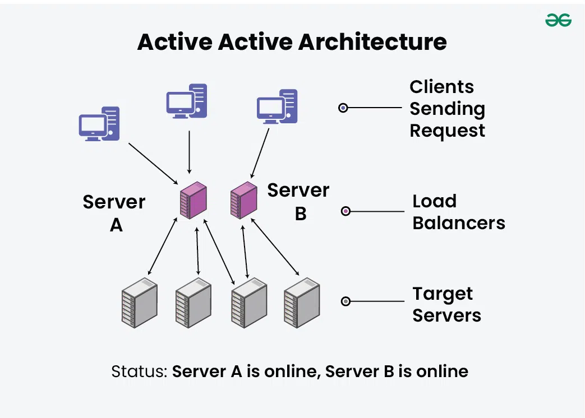
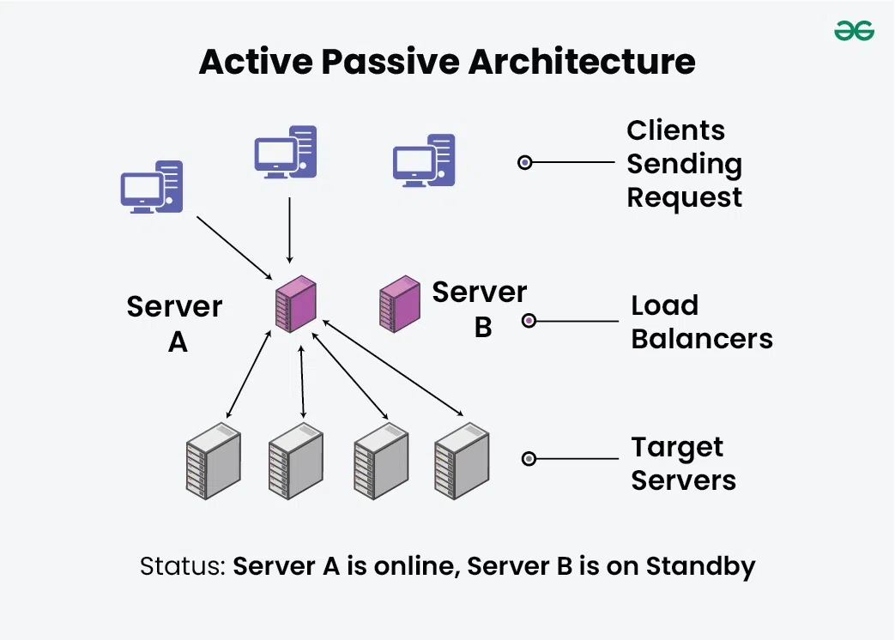
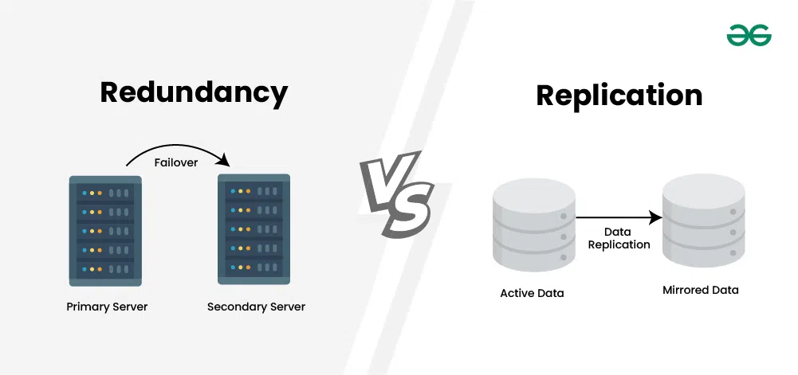

System Design Mastery
Master scalable systems with premium insights
🔁 Redundancy: Building Fault-Tolerant Systems
1️⃣ What is it?
Redundancy means having extra components (backup systems) so that if one fails, another takes over. It's the practice of duplicating critical components to eliminate single points of failure and improve availability.
Simple concept:
Redundancy = Backup for reliability
Examples:
- ✅ Two servers instead of one
- ✅ Multiple databases
- ✅ Multiple power supplies
In System Design, Redundancy means:
- 🖥️ Multiple servers handling same workload
- 💾 Multiple databases storing same data
- 🌐 Multiple network paths for data flow
- 🏢 Multiple data centers in different regions
Result: If one fails → system still works ✅
2️⃣ Why Does It Exist? (What Problem Does It Solve?)
Redundancy solves critical reliability problems in systems. It addresses fundamental challenges in distributed systems where failures are inevitable.
🚫 Problem Solved:
Single Point of Failure
One component crashes = entire system down
⏱️ Problem Solved:
Downtime During Crashes
Users experience service interruptions
🔧 Problem Solved:
Hardware Failures
Disks, CPUs, network failures are common
Redundancy Ensures:
- 📈 High Availability - system is up most of the time
- 🛡️ Fault Tolerance - system survives individual component failures
- ♻️ Continuous Service - users never experience downtime
3️⃣ What Breaks Without It?
Without redundancy, any single component failure brings down the entire system:
- ❌ One server failure = entire system down
- ❌ Database crashes lose all data
- ❌ Network disruption isolates users
📌 Real Example:
If only one payment server exists and it crashes → payments stop ❌
This could cause millions in losses for e-commerce companies.
4️⃣ When to Use / When NOT to Use
✅ When to Use Redundancy:
Critical Systems:
- 🏥 Healthcare systems
- 💳 E-commerce
- 📱 High-traffic apps
- 🏦 Banking systems
Examples of Redundancy:
- 🖥️ Multiple app servers
- 💾 Database replicas
- 🌍 Multi-region deployment
❌ When NOT to Use Redundancy:
Cost-Sensitive Projects:
- 👤 Personal projects
- 🚀 Low-cost prototypes
- 🔧 Small internal tools
- 🎓 Learning projects
⚠️ Consideration:
📌 Redundancy significantly increases cost (infrastructure, management, monitoring)
5️⃣ Types of Redundancy (Important)
🔄 Active–Active Redundancy
What it means:
All redundant components are running and serving traffic at the same time.
Example:
- 🖥️ 3 servers behind load balancer
- 📊 All 3 handle user requests simultaneously
- ✅ If one fails → other two continue automatically

✅ Advantages:
- Better performance (load sharing)
- No downtime on failure
- Maximum resource utilization
❌ Disadvantages:
- More complex setup
- Higher operational cost
- Data consistency challenges
Used in: Large web apps, social media platforms, streaming services
⏳ Active–Passive Redundancy
What it means:
One component is working (active). Another is standby (passive). If active fails, passive takes over.
Example:
- 🗄️ Primary database (active)
- 📋 Standby replica (passive)
- ↔️ Failover happens when primary fails

✅ Advantages:
- Simpler than active-active
- Easier to manage & maintain
- Lower cost than active-active
❌ Disadvantages:
- Slight downtime during switch
- Passive resources unused (wasted)
- Switching delay introduces latency
Used in: Banking systems, critical infrastructure, systems needing high safety
| Type | Traffic Handling | Downtime | Complexity | Example |
|---|---|---|---|---|
| Active–Active | All in parallel | None (00s) | High | Web apps |
| Active–Passive | One at a time | Small (~100ms) | Medium | DB failover |
6️⃣ Real App Connection
☁️ Cloud Systems
- 🌍 Multi-region deployments - serve users from multiple locations
- 🏢 Backup data centers - automatically takeover if primary fails
- 📡 Multiple CDN edges - redundant path to user content
Companies like AWS, Google Cloud, and Azure provide redundancy as core infrastructure. Netflix uses redundancy across multiple regions to handle failures without impacting users.
7️⃣ Redundancy vs Replication
They are related but not the same:
💾 Replication
Definition:
Copying data to multiple locations
Example:
Copying patient records to 2 computers
Purpose:
Keeps data safe & available
🔁 Redundancy
Definition:
Duplication of entire system components
Example:
Having 2 generators in a hospital
Purpose:
Keeps system running & available

📊 Differnce between Redundancy vs Replication
🎯 Key Insight:
- 🔁 Redundancy keeps system running
- 💾 Replication keeps data safe
- ✨ Big systems use both together for maximum reliability
🎯 Interview-Ready One-Liner
Redundancy is the practice of adding duplicate components in a system to eliminate single points of failure and improve availability and reliability.